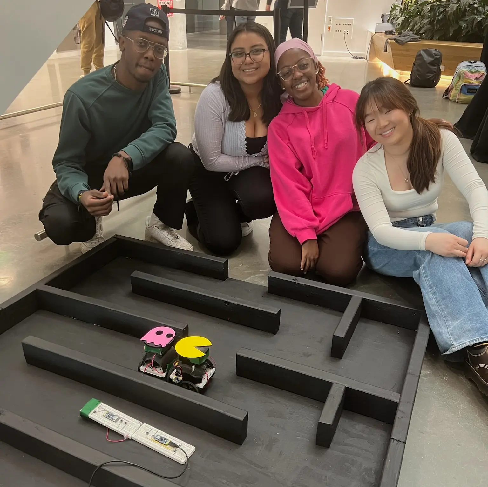
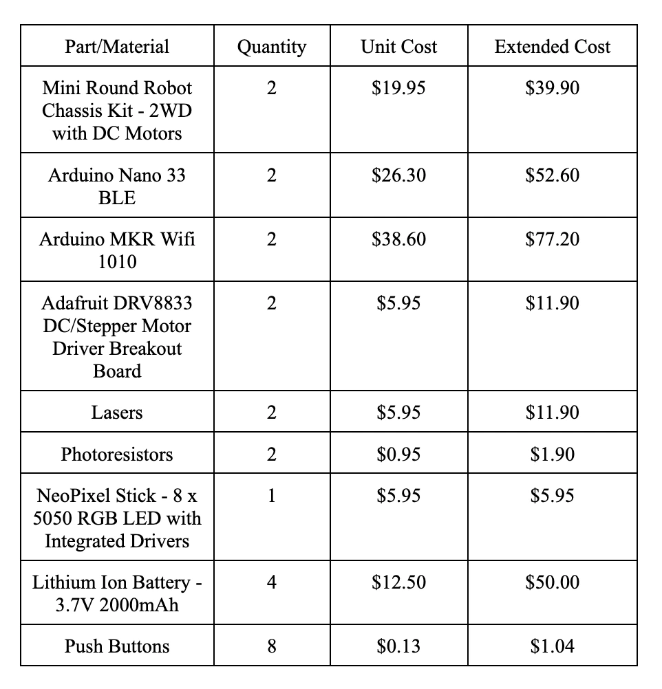

Spring 2024
This project involved the design and fabrication of a two-player wireless robot game inspired by Pacman, where one player navigates a maze while the other attempts to “tag” them using a laser-based detection system. The project integrated mechanical design, embedded systems, Bluetooth communication, and rapid prototyping into a fully interactive physical game.
This project aimed to create an engaging multiplayer game that builds upon the childhood classic Pacman. It takes the familiarity and nostalgia of the game and brings it into three dimensions, creating a shared feeling of joy and childlike playfulness between the two players.
We identified several key functional requirements: wireless directional control for two independent robots, reliable motor actuation and maneuverability within a constrained maze, a tagging mechanism capable of detecting close-range interactions, durable packaging that protected electronics, maze geometry optimized for gameplay and robot dimensions, and these requirements drove both the electrical and mechanical system architecture.
The original commercial controller concept proved incompatible with the system requirements, so we pivoted to designing custom Bluetooth controllers using Arduino hardware. The control system translated button inputs into motor states that drove steering for forward, reverse, and turning motions. During testing, the motors failed to receive sufficient current directly from the microcontroller outputs. To resolve this, the design was revised to integrate motor drivers, significantly improving reliability and motor performance.
To simulate “tagging,” laser diodes were mounted to the ghost robot while the Pacman robot used photoresistors to detect incoming light. Initial testing revealed sensitivity issues caused by ambient lighting and limited sensor response. The design was then improved upon by switching to larger photoresistors for improved detection, tuning resistance thresholds in software, and enclosing sensors within custom housings to reduce environmental light interference. A neopixel indicator was added to provide immediate visual feedback when a successful tag was detected.
Repeated testing exposed mechanical reliability issues, including disconnected wiring and robot instability during sharp turns. To address these problems, we designed custom enclosures and battery mounts in SolidWorks and fabricated them through 3D printing. The enclosures were designed to secure batteries and wiring during movement, shield photoresistors from ambient light, accommodate changing circuit layouts, and improve user visibility of the NeoPixel indicators. The robots also exhibited tipping during acceleration, leading to additional weight being added to the chassis to lower the center of gravity and improve stability.
The maze geometry was designed around the physical dimensions and turning radius of the robot platforms. Lane widths were optimized to allow smooth navigation without excessive wall collisions, prevent both robots from occupying the same lane side-by-side, and increase gameplay difficulty while maintaining maneuverability.